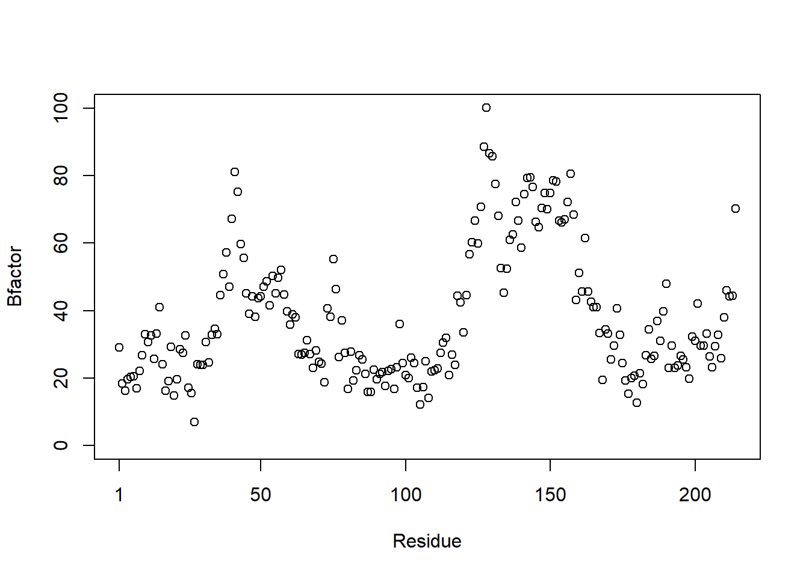
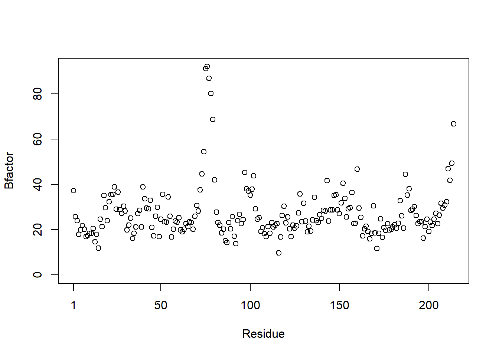
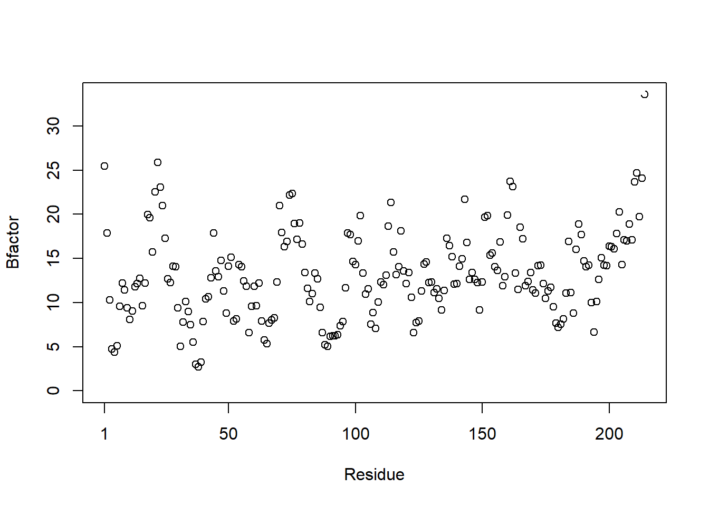
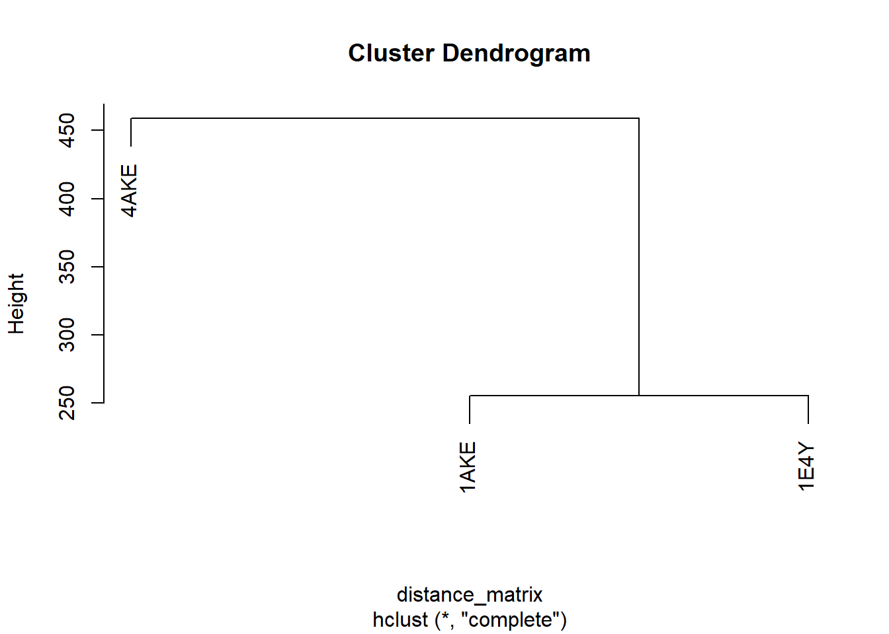
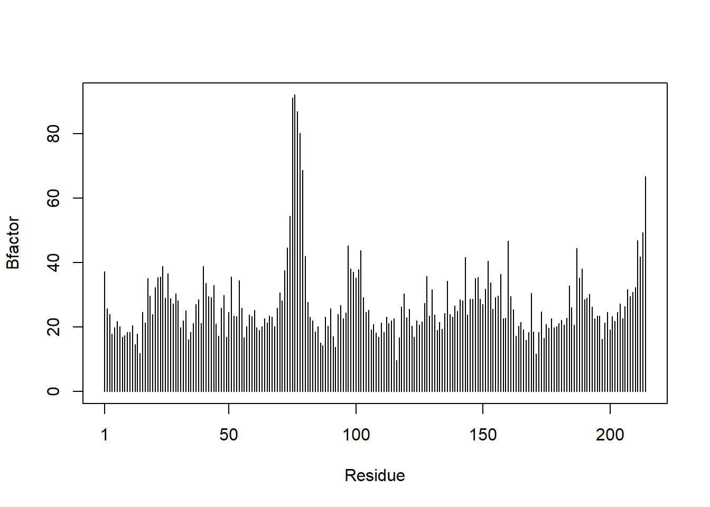
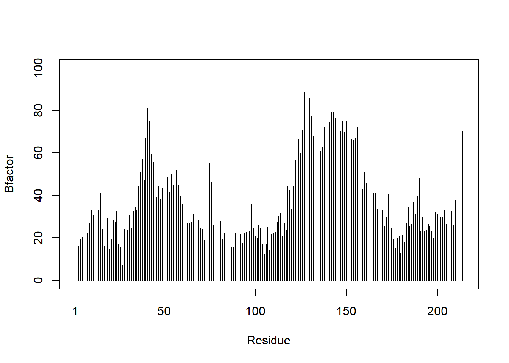
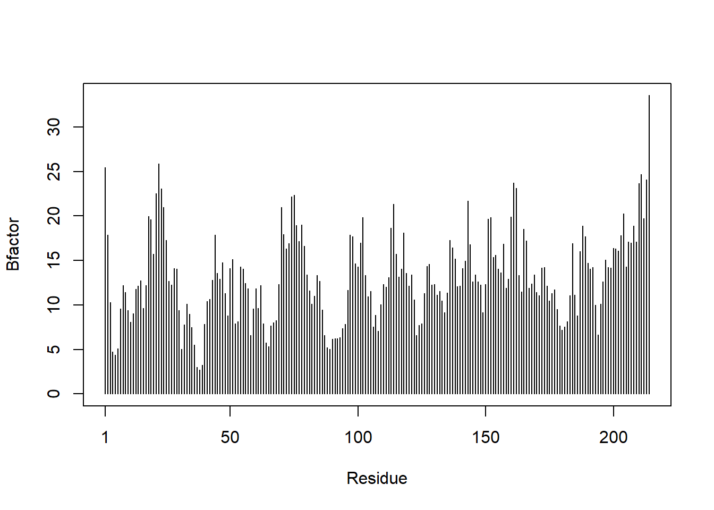

#install.packages("bio3d") (always install in console not quarto docs)
library(bio3d)HW06
Goal to improve analysis code
First to install bio3d:
Then inputting original read.pdb code. First assigning PDB files to characters S1-s3
s1 <- read.pdb("4AKE") # kinase with drug Note: Accessing on-line PDB files2 <- read.pdb("1AKE") # kinase no drug Note: Accessing on-line PDB file
PDB has ALT records, taking A only, rm.alt=TRUEs3 <- read.pdb("1E4Y") # kinase with drug Note: Accessing on-line PDB fileQ1. What type of object is returned from the read.pdb() function?
A: read.pdb() accesses protein data bank coordinate files
#Next assigning values to the PDB files that have been trimmed
s1.chainA <- trim.pdb(s1, chain="A", elety="CA")
s2.chainA <- trim.pdb(s2, chain="A", elety="CA")
s3.chainA <- trim.pdb(s3, chain="A", elety="CA")note: In Bio3D, the chain function is used for extracting the atomic coordinates and information of specific protein chains from a PDB (Protein Data Bank) file. note: CA = alpha carbon (CA) note: elety is a character vector of atom names (?).
Q2. What does the trim.pdb() function do?
A: Trim.pdb creates smaller pdb objects by choosing a subset of the pdb data.
Then assign chainA subselections to other values? This may be choosing specific coordinate data on the protein chains using the atom function.
s1.b <- s1.chainA$atom$b
s2.b <- s2.chainA$atom$b
s3.b <- s3.chainA$atom$bnote: In Bio3D, the atom function is used for extracting and manipulating atomic coordinate data and related information from protein structures represented in the PDB (Protein Data Bank) format. This function allows you to work with individual atoms within a protein structure, making it a valuable tool for structural bioinformatics and molecular modeling.
Then plotting the chainA subselections making a line graph from a scatter plot using “plotb3” which compares the residues to the “Bfactors”:
plotb3(s1.b, sse=s1.chainA, typ="p", helix.col = "0",sheet.col = "0", ylab="Bfactor")
plotb3(s2.b, sse=s2.chainA, typ="p", helix.col = "0",sheet.col = "0",ylab="Bfactor")
plotb3(s3.b, sse=s3.chainA, typ="p", helix.col = "0",sheet.col = "0",ylab="Bfactor")
Note: In structural biology, a B-factor, also known as the temperature factor, is a measure of the thermal vibrations or disorder of atoms in a protein or other macromolecule. B-factors provide information about the flexibility and mobility of atoms within a crystal or structural model. In Bio3D, a package for structural bioinformatics in R, B-factors can be analyzed and visualized to gain insights into the dynamics of a protein structure.
Q3. What input parameter would turn off the marginal black and grey rectangles in the plots and what do they represent in this case?
A: In Bio3D, specifically the plot.b3 function, the black and grey rectangles typically represent the secondary structure elements within a protein structure. Black rectangles typically represent alpha-helices while grey rectangles represent beta strands or beta pleated sheets. They can be removed by adjusting the color variables of the blocks by specifying helix.col = “0” and sheet.col = “0”,
Q4. What would be a better plot to compare across the different proteins?
A: Points might be a better plot to compare different proteins. Best fit-lines could also be added.
Q5. Which proteins are more similar to each other in their B-factor trends. How could you quantify this? HINT: try the rbind(), dist() and hclust() functions together with a resulting dendrogram plot. Look up the documentation to see what each of these functions does
A: First need to combine s1.b, s2.b, and s3.b using rbind() and assign to a value “three_kinases”:
three_kinases <- rbind(s1.b, s2.b, s3.b)
#Then alculate the distance between the B-factor profiles of different proteins using dist() and assigning to "distance_matrix"
distance_matrix <- dist(three_kinases, method = "euclidean")
#Then perform hierarchical clustering on the distance matrix to group proteins with similar B-factor trends together using hclust() and assigning the hclust result to a value "hc"
hc <- hclust(distance_matrix)Then plotting the heirarchical clustering to see which two proteins are most similar according to B-factor trends:
protein_names <- c("4AKE", "1AKE", "1E4Y")
plot(hc, labels = protein_names)
#should be protein s1.b, then s2.b and s3.b group together but relabeled to reflect pdb names.From the dendogram we can see that 1AKE and 1E4Y are most similar and cluster togeter
Q6. How would you generalize the original code above to work with any set of input protein structures? #want to reduce code so that can apply to an input, which is the only thing that’s really changing. could create a new function?
A:
#Define a function to read a PDB file, extract B-factors, and plot them
plot_kinase <- function(pdb_id) {
#Inside the function, we construct the PDB file name by appending the pdb_id to ".pdb" using paste0 and then use the read.pdb() function to read the PDB file.
s1 <- read.pdb(paste0(pdb_id, ".pdb"))
#Next Trim the PDB to chain A and retain only CA atoms
s1.chainA <- trim.pdb(s1, chain = "A", elety = "CA")
#Next extract the B-factor data for chain A using s1$atom$b.
s1.b <- s1.chainA$atom$b
#Finally, we use the plotb3() function to plot the B-factor values along with secondary structure elements for chain A of the protein.
plotb3(s1.b, sse = s1$chainA, typ = "h", helix.col = "0", sheet.col = "0", ylab = "Bfactor")
}
## Usage: Call the function with the PDB ID ex: plot_kinase("4AKE")plot_kinase("1AKE") PDB has ALT records, taking A only, rm.alt=TRUE
plot_kinase("4AKE")
plot_kinase("1E4Y")